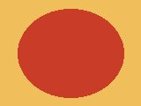

Creare il sito della pizzeria «Da Mario» con una pagina principale index.html, una pagina menu.html nella cartella pagine e un foglio di stile stile.css nella cartella css, collegato a entrambe le pagine. Le due pagine devono essere collegate tra loro con un link.
Usare il logo nella pagina principale e la foto della pizza nella pagina del menu, mettendo le immagini nella cartella img:

Qui CodeRunner mostra i risultati dei test dopo «Controlla».